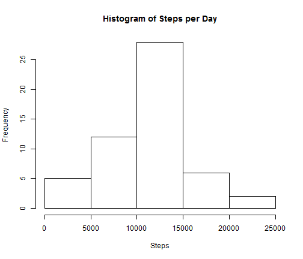

- What is mean total number of steps taken per day
- What is the average daily activity pattern
- Imputing missing values
Human Activity Recognition Using Smartphones Dataset
Analyze the acitivity dataset
Vaibhav Bhatnagar
Agenda
Load required libraries
library(reshape2)
library(lattice)
Loading and preprocessing the data
data <- read.csv("activity.csv", colClasses = c("numeric", "Date", "numeric"))
What is mean total number of steps taken per day?
melted <- melt(data, id.vars="date", measure.var = "steps" )
totalSteps <- dcast(melted, date ~ variable, sum)
hist(totalSteps$steps, xlab= "Steps", main = paste("Histogram of" , "Steps per Day"))

Calculate and report the mean and median total number of steps taken per day
Mean
meanSteps <- dcast(melted, date ~ variable, mean)
Median
medianSteps <- dcast(melted, date ~ variable, median, fill=0)
What is the average daily activity pattern?
dataNoNA <- na.omit(data)
meltInterval <- melt(dataNoNA, id.vars="interval", measure.var = "steps" )
totalStepsInterval <- dcast(meltInterval, interval ~ variable, sum)
plot(totalStepsInterval$interval,totalStepsInterval$steps, type="l", xlab = "Interval", ylab = "Steps")
title(main = "Nmber of Steps per 5 min Interval")

Question 3 - Imputing missing values
Poplulate the NA with the mean for that 5-minute interval
sum(is.na(data$steps))
## [1] 2304
for(i in 1:nrow(data)){
temp <- 0
if(is.na(data[i,1])){
temp <- mean(subset(data, data$interval == data[i,3])[,1], na.rm=T)
data[i,1] <- temp
}
}
continue....
Histogram of the total number of steps taken each day
meltedClean <- melt(data, id.vars="date", measure.var = "steps" )
totalStepsclean <- dcast(meltedClean, date ~ variable, sum)
hist(totalStepsclean$steps, xlab= "Steps", main = paste("Histogram of" , "Steps per Day"))

Mean
meanStepsClean <- dcast(meltedClean, date ~ variable, mean)
Median
medianStepsClean <- dcast(meltedClean, date ~ variable, median)